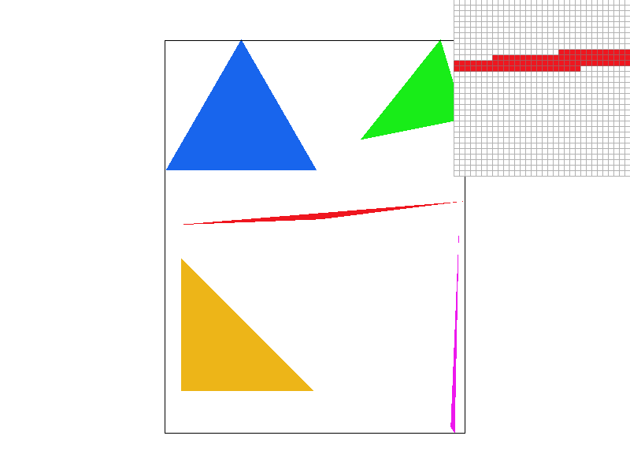
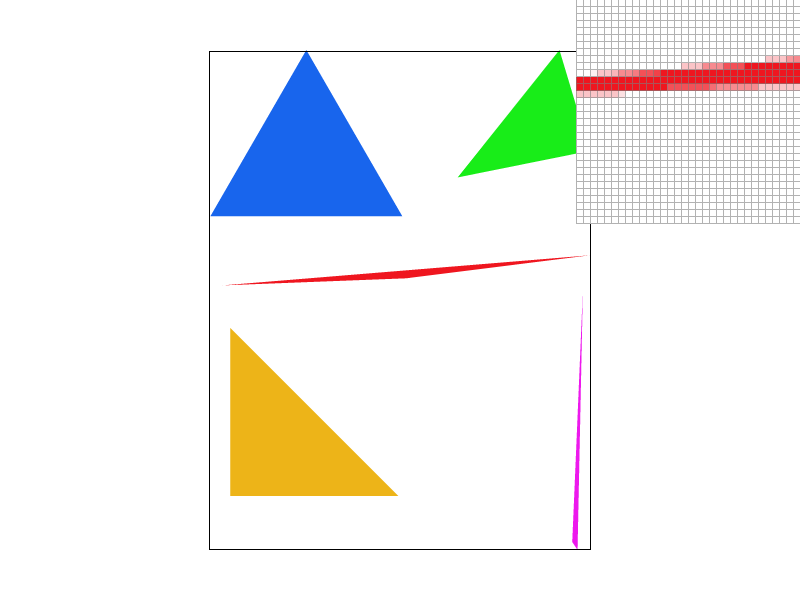
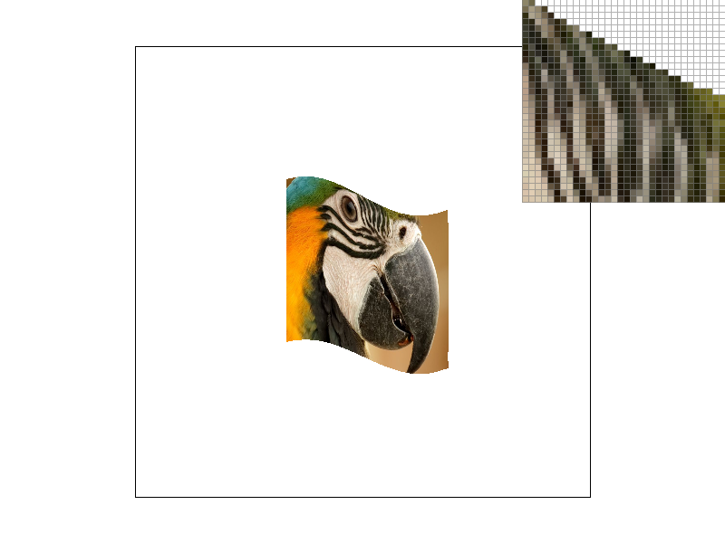
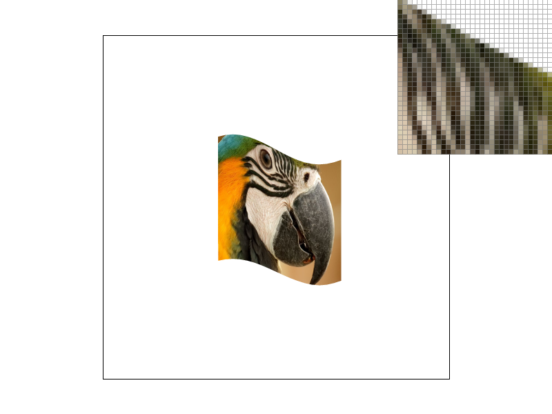
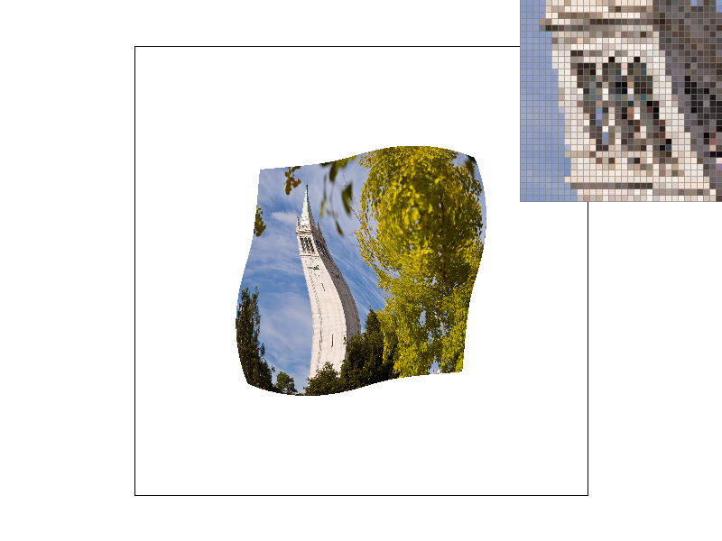
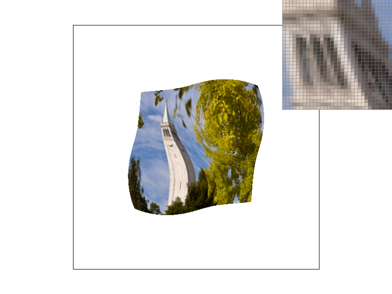
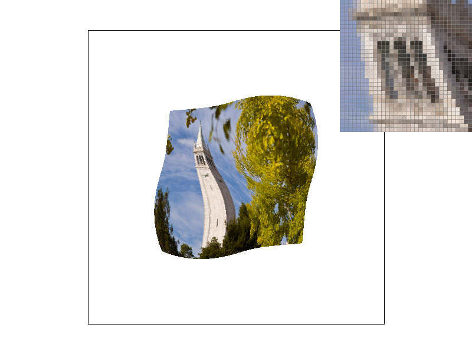
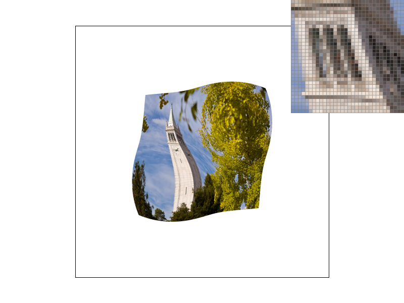
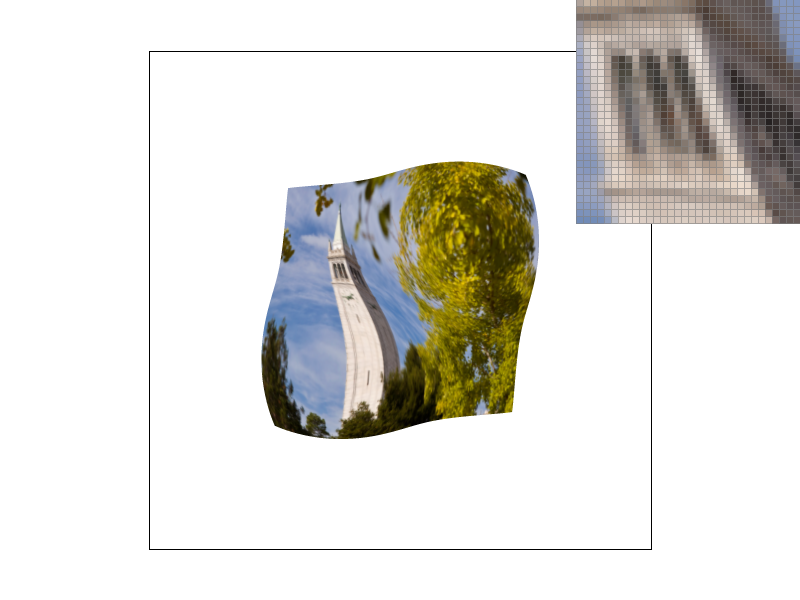

CS184/284A Spring 2026 Homework 1 Write-Up
Link to webpage: cal-cs184-student.github.io/hw-webpages-Dubu911/hw1/
Link to GitHub repository: github.com/cal-cs184-student/hw1-rasterizer-dubu
Overview
In this homework, I built a simple rasterizer that can draw triangles on the screen. I then made the edges look smoother by taking multiple samples per pixel and averaging them. I also implemented basic 2D transforms and used them to pose the robot with parts that move together. Finally, I added barycentric interpolation and used it for smooth colors and texture mapping with different sampling methods.
Task 1: Drawing Single-Color Triangles
When rasterizing a triangle, the function is given three points (the triangle's vertices). My job is to draw the triangle into the sample_buffer. If the center of a pixel in the sample_buffer lies inside the triangle, then I color that pixel; otherwise I do nothing.
Instead of checking every pixel in the sample_buffer, I compute the triangle's bounding box (the smallest axis-aligned rectangle that contains the triangle) using the minimum and maximum \(x\) and \(y\) values among the three vertices. I then only test pixels within this rectangle.
To determine whether a pixel center is inside the triangle, I use the edge-testing method from class. For each of the triangle's three edges, I compute a 2D cross product (2x2 determinant) between the edge direction and the vector from the edge to the sample point. This value indicates which side of the edge the point lies on. If the three values are all nonnegative or all nonpositive, then the pixel center is inside or on the boundary of the triangle.
Task 2: Antialiasing by Supersampling
I increased the sampling rate for each pixel. The previous method only sampled once at the center of the pixel. A higher sampling rate means I divide one pixel into smaller chunks and check whether the center of each smaller chunk is inside the triangle. It is like having higher resolution vision. I handle this internally by increasing the sample_buffer size. Before I output the image, I scale down the sample_buffer by averaging the RGB values for the subsamples that belong to each pixel. The images below show the change in color intensity for pixels as the sample rate increases. This can look blurrier, but the edges look smoother.
|

|
|
|

|
|
Task 3: Transforms
I modified the original robot.svg and saved it as my_robot.svg. I tilted the torso slightly using a small rotation, and I also rotated the head so it looks like cubeman is leaning into the pose. Then I adjusted the transforms on the arms and legs by changing their translate and rotate values, so one arm is raised and the legs are angled more like a step. The main idea was to use the hierarchical <g transform="..."> structure so that rotating a parent group also moves the child parts together, which makes it easier to pose the robot.
Task 4: Barycentric coordinates
I reused the structure from Task 2. The main change was to compute the three barycentric coefficients for each sample point. I used the edge function from the slides: α = LBC(x, y) / LBC(xA, yA), and I computed β and γ the same way using the opposite edges. I first computed the denominators once per triangle, then for each sample point I computed the numerators and divided by the denominators to get α, β, and γ. Finally, I used these coefficients to interpolate the color by taking a weighted sum of the vertex colors for each RGB channel.

Task 5: "Pixel sampling" for texture mapping
Pixel sampling is how I determine the color of a screen pixel from a texture image. For each sample point inside a triangle, I first computed its barycentric coordinates (α, β, γ) and then used them to interpolate the texture coordinates: \( u = \alpha \cdot u_0 + \beta \cdot u_1 + \gamma \cdot u_2 \) (same for \( v \)). This gives me \( (u, v) \) values in the range \([0, 1]\). I use \( (u, v) \) to pick the correct texel in the texture by converting it to texel coordinates, for example \( x = u \cdot (\text{width} - 1) \) and \( y = v \cdot (\text{height} - 1) \). This is the texel color I read and assign into the sample_buffer.
These texel coordinates are not integers. For nearest sampling, I choose the closest texel (for example using round) and return that texel's color. For bilinear sampling, I take the four neighboring texels around \( (x, y) \) and interpolate between them based on how far \( (x, y) \) is from each neighbor. This makes the texture look smoother.

|

|
|

|

|
At sample rate 1, the two methods show a meaningful difference. High-frequency areas look more blocky when using nearest sampling, while bilinear sampling makes the texture smoother. However, bilinear does not make the triangle edge smoother by itself, because it only changes how I sample the texture color, not the triangle coverage.
At sample rate 16, both images look good, and bilinear still looks smoother inside the object. Since supersampling makes the triangle edges smoother, both nearest and bilinear show smoother edges. Nearest also looks better at 16 samples per pixel because sampling multiple subpixel locations averages texture values around the pixel area. Bilinear still improves a few pixels, especially in high-frequency regions, because each sample does interpolation between neighboring texels.
Task 6: "Level Sampling" with mipmaps for texture mapping
When I texture-map a triangle, one screen pixel might cover more than one texel in the texture, especially when the triangle is far away or tilted. If I always sample from mip level 0 (full resolution), I am trying to use a very detailed texture even when it gets squished into a small screen area, and that causes aliasing like shimmering or noisy patterns. Mipmaps help by storing smaller versions of the same texture, and level sampling is about picking which mip level to sample from depending on how "zoomed out" the texture is on the screen.
To estimate how fast the texture coordinates change when I move in screen space, I compute \( (u, v) \) at the current point \( (x, y) \), and also at \( (x+1, y) \) and \( (x, y+1) \). Then I take differences like \( uv(x+1,y) - uv(x,y) \) and \( uv(x,y+1) - uv(x,y) \). Those differences tell me how much the texture moves when I move 1 pixel on screen. After scaling by the texture width and height, it becomes "how many texels per pixel" in the x and y directions. Using the larger one (the max footprint), I take \( \log_2 \) of that value to get the mip level, because each mip level halves the resolution.
After I compute the level:
- L_ZERO: I always use level 0 (full resolution) no matter what.
- L_NEAREST: I compute the level and round it to the closest integer mip level.
- L_LINEAR: I compute a fractional level and blend between the two closest mip levels (floor and ceil), so the transition between levels is smoother.
Tradeoffs between the three techniques
Pixel sampling (nearest vs. bilinear): Nearest is faster because it reads only one texel, while bilinear reads four and interpolates. Bilinear does not use more long-term memory, but it does more computation per sample. Bilinear is much better for smoothing texture details, especially when the texture has high-frequency patterns.
Level sampling (mipmapping): The overhead is small compared to the texture filtering work. There are a few extra steps to compute the mip level, but it is not a big overhead. Mipmaps require storing multiple levels, but each level is half the resolution of the previous one, so total storage is less than double the level 0 texture. This works really well for reducing shimmering and moiré patterns on objects that are far away or highly minified.
Number of samples per pixel (supersampling): Higher sample rate makes runtime slower, with work scaling roughly proportional to the sample rate. It also needs more memory because the sample buffer size scales with the sample rate. Supersampling is very strong for smoothing edges and reducing jaggies, but it costs the most in runtime and memory compared to the other two methods.
Image comparisons
The following four images show the required combinations at sample rate 1:
|

|
|
|
|

|
Additional combinations:
|

|
|
|

|

|